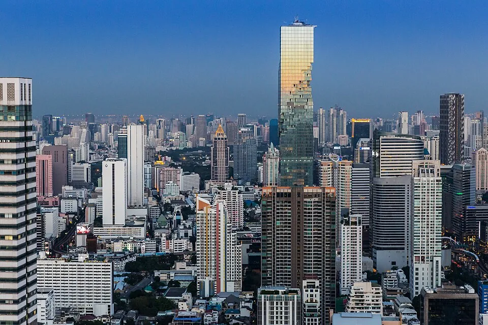

11月仍热，住宿晚数和入境天数分开看
曼谷适合愿意围绕住处和工位安排日常的人。拉差达一带有带小厨房的整间月租公寓；Thonglor和Ekkamai能找到有明确票型的办公空间。房间里能不能安静开会、周末是否进得了工位，会比“附近咖啡馆多”更影响这一月。
11月的历史平均最高气温仍有33.1℃，最低24.7℃。白天活动要考虑炎热，房间的空调和工作桌也要一起问。住房网页写有Wi-Fi，只能说明商家提供这项设施，网络是否适合你的会议和上传任务，要在付款前确认，并准备手机备线。
中国普通护照当前按中泰协定单次免签停留不超过30日，每180日累计不超过90日。本文用30晚计算生活预算；入境和离境日仍以你的签证及获准停留记录为准。远程工作目的另看入境与工作安排，不要用住宿晚数代替许可天数。
三档都按一张整月工位票，房租留多少另选
下表按单人承担整间房、30晚规划，金额均为泰铢。住房和五项生活费是编辑预留。工位采用the Hive Thonglor公开的每月5,000泰铢，加7%增值税后为5,350泰铢。这个月票的单月购买条件与押金还要向门店确认。
三档采用相同的办公票，主要差别在住房和日常消费额度。三档都没有对应一套已经确认可订的房源，不能按总额反推某个社区一定租得到什么房。
如果只在房间工作，可以不购买共享办公票；偶尔去工位则按实际张数买日票。以每30晚去4天为例，the Hive的393泰铢日票加税后每张420.51泰铢，工位预留为1,682.04泰铢。月票按整张计算，日票按使用天数计算，晚数变化后的结果以预算工具为准。
往返国际机票、签证与工作手续、保险和可退押金不在合计内。Sitara月住保证金为5,950泰铢，另收可退钥匙押金200泰铢；其他房源与工位押金未确认。水电洗衣行只是支出预留，实际超量账单和未确认税费仍要核对，在线订房交易费也需另问。
- 单人承担整间房、30晚；住房与生活费为编辑预留，工位按已核公开票型参照，均非可订总价。
- 总额包含所列预留和参考票价；未确认的税费与超量费用、机票、签证、保险及押金另计。
各项换算后都取整，总额则先加原币、再统一换算，因此逐项相加可能有一点差额。
| 项目 | 原币（THB） | 显示币种（CNY） | 依据与条件 |
|---|---|---|---|
| 住房预留 | 28,000 泰铢 | 5,523 元 | Rates — Sitara Place Hotel & Serviced Apartments Bangkok for Digital Nomads计价条件规划额度，不对应确定库存或30晚全包报价；公开一月价与28晚历史样本仅作住法参考。 30晚按一笔月价参照或住房预留规划，最终日期和含费范围仍须确认。 |
| 共享办公（1张整月票） | 5,350 泰铢 | 1,055 元 | Memberships — the Hive Thonglor Terms — the Hive Thonglor计价条件为30晚预留1张整月票；不把月票除以30当日票。 Full Time5,000加7%VAT，24/7、每月30天使用权；须确认可仅买单月、押金及续费。 |
| 餐饮预留 | 12,000 泰铢 | 2,367 元 | 预算预留计价条件编辑餐饮规划，不是商家菜单合计。 按所选30晚调整，不代表实际消费。 |
| 本地交通预留 | 2,000 泰铢 | 395 元 | BTS One-Day Pass计价条件按日常出行留款，不是轨道月票；BTS日票只限绿线。 按所选30晚调整，不代表实际消费。 |
| 通信预留 | 650 泰铢 | 128 元 | 预算预留计价条件通信额度，未绑定已核运营商套餐。 按所选30晚调整，不代表实际消费。 |
| 水电与洗衣预留 | 1,000 泰铢 | 197 元 | Rates — Sitara Place Hotel & Serviced Apartments计价条件电量超额及洗衣预留，实际按套餐范围与账单；水已含不再视为额外商家报价。 按所选30晚调整，不代表实际消费。 |
| 日用与休闲预留 | 3,000 泰铢 | 592 元 | 预算预留计价条件编辑日常杂项额度。 按所选30晚调整，不代表实际消费。 |
| 总计 | 52,000 泰铢 | 10,257 元 | 按原币总额统一换算 |
拉差达整间公寓有月价，施工和月期要写进询价
Sitara Place：39平方米，适合先把房间工作条件问清
Sitara Place的公开月价中，Home Studio位于2–3层，每月18,000泰铢，最低租期一月；Premium Studio在4–6层，每月19,000泰铢。两者都是39平方米的整间Studio，带独立卫浴、阳台和小厨房，设施表列有工作桌。单人承担整间房的预算可以参考这个住法，商家允许的最高入住人数仍须确认。
Serviced套餐含水和网络，每周清洁一次、换床品一次，毛巾每周更换两次；电每月包含300度，超出按政府费率收取，网页没有在这张表里列出实际单价。月住保证金5,950泰铢另付，另收可退钥匙押金200泰铢，交还钥匙退还。增值税是否已含、在线订房交易费金额和退押金条件，询价时要一并写清。
这家的“一月”有自己的起止日算法。网站举例，1日起租覆盖到当月30日或31日，12日起租覆盖到下月11日。若你要2026年11月1日入住、12月1日退房，共30晚，需要让商家按这两个日期报总价。Home Studio另列600泰铢的额外日价，也不代表那一天一定有房或一定按这个组合成交。
首页施工公告写明，南侧邻地施工持续至2026年12月，周一至周六08:00–18:00可能出现噪声。白天要在房里接会，把房间朝向和施工时段列为订房条件。升到高楼层并不能自动证明房间更安静。
其他月住入口，把短住总价单独问出来
同在Phra Ram9生活范围的B.U. Place，官网16,900泰铢/月起绑定一年合同，短期月住须另询价格。它公示免费接驳每小时一班，运行08:00–18:00。晚上回房的交通要另作安排。
如果更想围绕Sathorn安排生活，可以向The Narathiwas询整月价。页面没有公开租金，但写明1–5个月住期押金相当于一个月租金；其月价条款含服务费和税费，一居每月有3,000泰铢水电额度。房费未知，不能把这笔额度当成房租，也不能提前填出该房源的总预算。
Thonglor看全天月票，Ekkamai按08–20时安排
工位可以反过来帮助选房。需要晚间或周末持续工作的，the Hive Thonglor的Full Time公开列24/7使用；以亚洲白天工作为主的，可以比较UnionSPACE Ekkamai。两家分店的营业规则不同，订房时把自己最早的一场会议和最晚下班时间一起带进去。
| 分店与票型 | 公开价 | 使用条件 |
|---|---|---|
| the Hive Thonglor 日票 | 393泰铢，另加7%税；含税420.51 | 1天，09:00–18:00 |
| the Hive Thonglor Full Time | 5,000泰铢/人/月，另加7%税；含税5,350 | 每月30天使用权，24/7；单月承诺和押金待确认 |
| UnionSPACE Ekkamai 日票 | 250泰铢，含税情况未说明 | 主店公开营业08:00–20:00，周一至六及部分周日 |
| UnionSPACE Ekkamai 一月无限工位 | 4,000泰铢，含税情况未说明 | 一月套餐；周日具体开放日、押金及取消条件待确认 |
the Hive Thonglor在46/9 Sukhumvit Soi 49，设施列有电话亭；UnionSPACE Ekkamai在30 Sukhumvit Soi 61，列有Silent Booth。房间名称不能证明可以连续占用数小时，长会要问预约和时长限制。本文没有这两处的隔音或网速实测。
一个以Ekkamai为中心的工作日，可以按门店08:00开门和20:00结束安排；周日需要工作，就在购买月票前确认那天是否开放。夜间交付较多的人，可以问清Hive的24/7出入流程。住在拉差达、每天去素坤逸办公的方案，则要把真实房源入口与工位地址放进路线查询，再决定是否愿意每天往返。
T-One高层咖啡空间，按3小时网络安排短任务
Paper Plane Project位于Sukhumvit Soi 40的T-One Building 40层，官方指向BTS Thonglor站。门店页列每天09:00–次日01:00，适合放进素坤逸沿线的咖啡与短时工作备选。
它的免费工作Wi-Fi只提供3小时，FAQ还写有DJ和音乐安排。可以把一次资料整理或短任务放在这个时间窗里；整天在线和安静开会的需求，要另找已经确认的安排。Wi-Fi续时条件、插座和网速尚未确认。
单人也不要默认可以用会议室。店家写明会议室至少4人，并按时段设最低消费。入场免费与这些使用条件应一起看。
0家符合条件
没有符合这组条件的地点，换一个筛选试试。


把住处和工位放在一张图里，留意轨道票的边界
下面的地址可以保存下来，按住处、工位和咖啡空间分开看。它们用于定位和询价。本文没有现场步行记录，也没有核定门到门的步行分钟数。
| 地点 | 原页地址或位置 | 安排时看什么 |
|---|---|---|
| Sitara Place | Ratchada Soi 3，官方指向MRT Phra Ram9 Exit 1 | 房间朝向、施工与接驳 |
| the Hive Thonglor | 46/9 Sukhumvit Soi 49 | 日票09–18时或Full Time 24/7 |
| UnionSPACE Ekkamai | 30 Sukhumvit Soi 61 | 08–20时及周日开放日 |
| Paper Plane Project | T-One Building 40层，Sukhumvit Soi 40 | 3小时免费工作Wi-Fi |
BTS One-Day Pass为150泰铢，仅限绿线，签发或登记当日可无限次乘坐，不可退款。它不能用来覆盖MRT或机场线。只有一天会多次乘坐绿线时，才把日票与当天实际路线的单程票合计比较；整月通勤按实际起终站另算。
地点名单可直接使用。底图需要网络。
中国普通护照当前30日，远程工作目的另办相应手续
中国驻泰国使馆2026年9月2日提醒说明，自9月15日起，中国普通护照按中泰双边协定，以旅游、探亲及其他符合协定的事由免签赴泰，单次停留不超过30日，每180日累计不超过90日。此前面向93个国家和地区的单方面60日免签政策已取消。
使馆要求，从事工作等须事先批准的活动，或计划停留超过30日，应在入境前办妥相应签证。远程工作者可查看DTV对应类别，再按所在地确定受理馆与材料。DTV的五年有效期和每次180日停留是两项条件，延期须另申请。具体准备可读本站泰国DTV申请前说明。
护照有效期应不少于6个月，并备妥返程或第三地机票、住宿证明及足额资金。需办理入境的非泰籍旅客，通过泰国移民局官方入口免费办理TDAC；官方FAQ写抵达前、包含抵达日的3天窗口，按表单允许日期申报。30晚订房例子只用于预算和询价，实际离境日期仍要服从获准停留记录。
11月少雨一些，空调和空气检查仍要保留
泰国气象局1991–2020年气候资料里，Bangkok Metropolis站11月月雨量44.6毫米，平均5个雨日；同站10月为288.7毫米和17个雨日。11月历史上明显少雨，但平均最高气温33.1℃，白天仍热。
这组常年值适合判断月份，不能当成2026年11月逐日预报。临出发和安排户外活动时，再查泰国气象局预警。房间长时间开空调的用电量，也要结合实际电表和套餐额度考虑。
少雨并不能保证空气状况。泰国污染控制部门的Air4Thai说明提供逐小时空气质量指数和细颗粒物信息，也有历史记录与空气预报。住下后按房间和工位附近站点查看。本文没有2026年11月的空气质量保证。
一份28晚账单：完整公寓换来了工作空间，也留下距离
Jethro Williams在2026年4月30日的曼谷文章中，写了自己2025年10月30日至11月27日入住Siam Plaengna的经历。他直接预订Deluxe Queen Suite，住28晚，费用表里的房费和总额均为25,000泰铢。原文没有明确同行人数，也没有拆出水电、税费和押金。
作者那段时间在做编程项目，喜欢公寓的完整厨房和阳台洗衣机，也认可在屋里工作与运动的空间。他知道位置相对孤立，住下后仍有些嫌离常去的地方远；但做项目时也珍惜这份隔离感。
网络感受同样有条件。他说28天中有一天不稳，影响视频通话，其余时间自己认为可用。这是作者当次住宿的记录，没有上传下载测速。25,000泰铢保留为2025年的28晚样本，2026年11月的30晚预算仍用当前日期重新询价。
和清迈比较时，保留同一种工作安排
曼谷这篇的选择从具体地址出发。拉差达有整间公寓可参考，工位看Thonglor的全天月票或Ekkamai的白天工位，短时工作还可以去T-One的咖啡空间。你确实要用这些地方，才值得围绕它们安排这一月。
如果也在考虑清迈，可以打开清迈月住指南，两边都选单人整间房、30晚和同一种办公方式，再比较住房预留与押金占款。一个方案在房间工作、另一个天天买工位票，直接比较总额很容易漏掉使用条件。
把30晚、房间朝向和完整费用写进同一封询价
按真实入住和离店日期、一个人承担整间房来问价。拉差达候选房另问朝向与邻地施工是否影响白天通话；请运营方把水电额度、超额单价与在线交易费列进同一份账单。
下面的询价文字会随晚数更新，由你复制后自行发送。询工位时，再附上到场日期和每天时段，确认单月条件、押金及电话亭预约。拿到整段房费后填进预算工具，保留最终报价。
这些条件会改变曼谷这一月怎么订
18,000泰铢能直接订满30晚吗？
不能据公开月价作这个承诺。Sitara最低一月18,000泰铢，且网站有自己的月期算法；完整入住退房日期、尾晚费用和空房都要确认。
晚上工作，买日票够不够？
the Hive日票只列09:00–18:00，Full Time才列24/7。UnionSPACE Ekkamai主店公开到20:00，部分周日开放。晚间使用要按具体票型确认。
150泰铢交通日票能覆盖MRT吗？
BTS One-Day Pass只适用绿线。MRT或机场线的支出另算，也不能把这张日票当作全月通勤票。
2026年11月中国普通护照还能免签60日吗？
按中国驻泰国使馆9月2日提醒，9月15日起适用双边协定的单次30日、180日累计90日条件。工作用途和超过30日停留须在出发前办相应签证。
三档预算能保证订到同价住房吗？
三档住房都是编辑预留，尚无2026年11月确切30晚的完整可订报价。把你取得的全部晚数房费填入预算工具，生活方式和工位票也按实际选择调整。
价格出处与图片署名
作者：Roamorrow 编辑部。本文链接不收取返佣。预算预留、公开价格与具名经历在对应段落说明；房型和含费范围按自己的日期确认。
价格与资料出处
- Rates — Sitara Place Hotel & Serviced Apartments · 2026-10-27
核到公开最低一月价，未取得2026年11月确切入住退房日期报价或空房确认。
- Home — Sitara Place Hotel & Serviced Apartments · 2026-10-27
施工是运营方公告，不代表每一间房同等受影响；须问房间朝向与工作时段。
- Memberships — the Hive Thonglor · 2026-10-27
日票9–18时与Full Time 24/7不可混用；Week Pass的连续/分散有效期未确认。
- Terms — the Hive Thonglor · 2026-10-27
通用网站条款不能代替分店订单和会员协议；不据此认定可无条件购买单月。
- UnionSPACE Bangkok — Ekkamai flagship plans · 2026-10-27
VAT是否已含、押金、取消、10日票有效期与周日具体开放日未核。
- BTS One-Day Pass · 2026-10-27
仅绿线票，不能外推MRT蓝线、机场线或其他轨道全城通用。
- Bangkok for Digital Nomads · 2026-10-27
原文日期2026-04-30。 历史作者自报，不是现价、商家承诺或本站亲历；没有独立核验账单。
- 关于泰国调整免签政策的领事提醒 · 2026-10-27
原文日期2026-09-02。 适用中国相关护照，不外推别国护照或其他旅行证件。
- 中秋国庆假期来泰旅游注意事项 · 2026-10-27
原文日期2026-09-20。 节假日提醒的天气段不能当11月曼谷预报。
- 3 Special Types of Destination Thailand Visa (DTV) Tourist Visas · 2026-10-27
原文日期2024-10-02。 基础页更新2024-10-02；不以此替代2026年中国大陆受理馆具体材料。
- Destination Thailand Visa · 2026-10-27
原文日期2024-07-17。 只用其全国框架说明有效期与每次停留的区别；不将英国费用、居留及无犯罪材料外推大陆申请人。
- Official Thailand Digital Arrival Card (TDAC) — No Fees Required · 2026-10-27
TDAC不是签证或停留许可。
- Climatological Data of Thailand for 30 Year Period (1991–2020), Bangkok Metropolis p.51 · 2026-10-27
原文日期2023。 历史气候常年值，不是2026年11月预报、每年的保证或实时空气质量。
- Air4Thai แอปเดียว รู้ทุกเรื่องคุณภาพอากาศ · 2026-10-27
原文日期2026-08-10。 此页只支持监测入口；没有读取2026年11月曼谷实时值，不声称某月空气一定安全。
- FAQ — Paper Plane Project · 2026-10-27
原文日期2025-07-30。 免费入场不等于无消费全天办公；Wi-Fi续时与消费金额未核，插座或网速也未确认。
- Store — Paper Plane Project · 2026-10-27
FAQ只写至深夜；此处01时是本轮门店页公开营业范围，临时包场/节假日须另查。
- B.U. Place Hotel & Residence — Bangkok · 2026-10-27
16,900不能计入30晚住房报价或最低月住价。
- Long Stay — The Narathiwas Hotel & Residence · 2026-10-27
没有房租金额，不能补成第三套现价或已核预算。
- Official TDAC — FAQ & Update · 2026-10-27
同页另用up to72hours措辞；不替读者扩大时间窗，按官方表单可选日期办理。
- Booking Enquiry — Sitara Place Hotel & Serviced Apartments · 2026-10-27
未实际下单或取得指定日期房间报价。
- ECB欧元参考汇率 · 2026-10-26
欧洲央行2026年10月26日参考值，仅用于规划换算；银行和支付费用另计。
下班后的活动，选能重复参加的一项
完整公寓能减少洗衣和准备食物的来回，也可能让人整周待在同一个房间。可以把一项下班后的固定活动排进日历，工作日只保留自己愿意承担的交通。
Jethro的文章还提到，他参加过曼谷Meetup活动，并推荐过Lumpini Running Club和Bangkok Cultural Exchange。这里能提供的是具名参加者的线索；是否仍有活动、报名和语言条件，要看你那一周的主办方页面。
the Hive的设施和会员页也列有社群活动。可以在试用工位时一起问当月排期，而不必为了一张社交日历每天换工作地点。